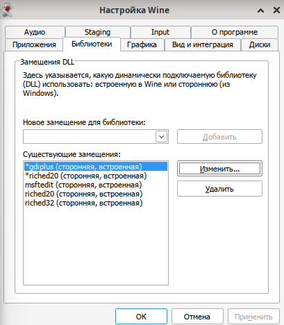
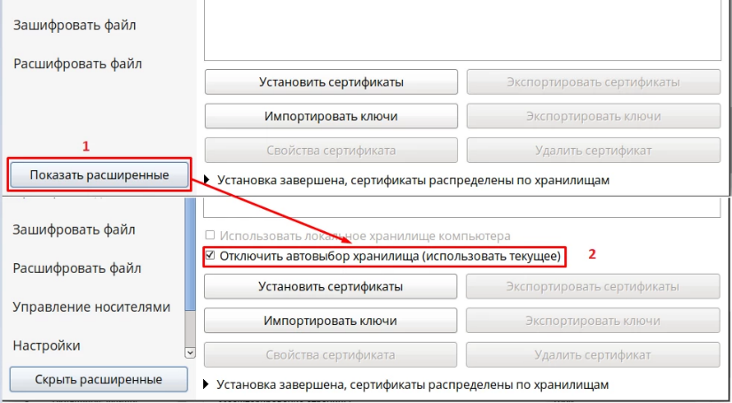
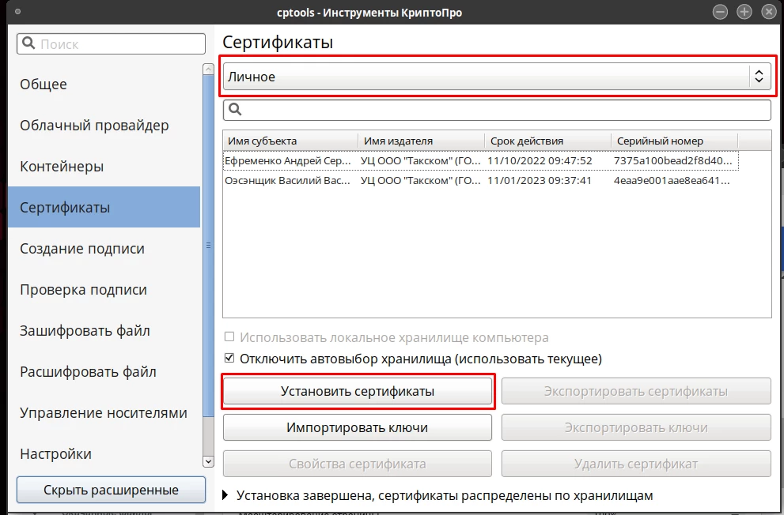
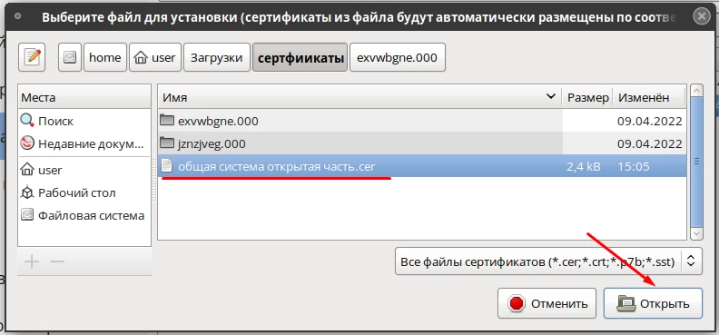
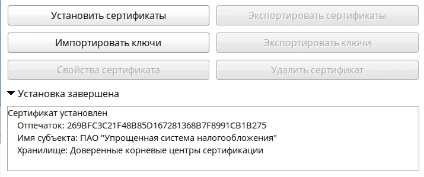

При установке в режиме UEFI обязательно создайте раздел EFI размером 512 МБ, файловая система FAT32, точка монтирования /boot/efi. В противном случае система не загрузится.
Если используется режим Legacy(BIOS), то создавать EFI-раздел не нужно.
Чтобы понять какая микропрограмма стоит достаточно раскрыть список "Тип раздела" при создании раздела, если в списке есть "efi system partition", значит UEFI, если только "FAT32", значит Legacy(BIOS).
1. Создание раздела efi
2. Создание раздела swap
Обязательно создайте раздел для Swap (подкачка) хотя бы 8Гб. В некоторых ситуациях отсутствие swap может привести к "тормозам", даже если ОЗУ свободно.
3. Создание основного раздела /
Создание разделов для микропрограммы Legacy(BIOS)
1. Создание раздела swap
Обязательно создайте раздел для Swap (подкачка) хотя бы 8Гб. В некоторых ситуациях отсутствие swap может привести к "тормозам", даже если ОЗУ свободно.
2. Создание основного раздела /
Далее. Загрузитесь с жесткого диска.
После загрузки с жесткого диска.
Снять галочку "Установить или сбросить пароль"
Настройте сеть
Задайте пароль root
Создайте учетную запись пользователя
После установки
Удалить атрибут noexec в /etc/fstab с /tmp и /home
Примечание
Если раздел /home отдельно не создавался при разметке диска, то его и не будет в fstab
В редакторе vim для входа в режим ввода нажмите: a или i или o
a - ввод после курсора; i - ввод до курсора; o - ввод с новой строки
Для сохранения и выхода войдите в режим команды нажав Esc затем наберите: :wq
Затем нажмите Enter
Для СП фиксация для исключения деградации
su -
integalert fix
Управление пользователями
su -
# Добавление нового пользователя user1
useradd user1
# Создать пароль для пользователя user1
passwd user1
# Предоставление прав суперпользователя su
usermod -aG wheel user1
# Удалить из группы wheel
gpasswd -d user1 wheel
Обновление Альт СП релиз 10 до версии 10.2
Автоматическое обновление
Для простоты обновления был написан bash скрипт update-kernel_10.2.sh. Данный скрипт выполняет все действия, которые описаны в нижестоящих главах, а именно: переход на ветку c10f2, обновление ядра и проверка с фиксацией. Путь до скрипта: dist/update_kernel/update_kernel_10.2.sh
# Сделайте скрипт исполняемым
chmod +x ./update_kernel_10.2.sh
# Запустите скрипт
./update_kernel_10.2.sh
# выберете пункт 1
# следуйте инструкциям (нажимайте enter на все вопросы)
# после перезагрузки запустите скрипт еще раз...
./update_kernel_10.2.sh
# выберете пункт 2
# ...
# Обновление до ALT Linux СП 10.2 завершено!
# Если после выполнения 2-го пункта видите такую надпись, значит обновление прошло успешно
Примечание
Если скрипт выполнился успешно, то никаких других действий по переходу выполнять не надо.
Актуализация текущей пакетной базы
Закомментировать диск с установщиком Альта в fstab, иначе без установочного диска будет ошибка при обновлении дистрибутивов
Если файловая система защищена от изменений механизмом IMA/EVM, отключите его. Для этого запустите от имени root команду integrity-remover, после чего система будет перезагружена.
Чтобы проверить, используется ли integalert используйте команду: systemctl is-enabled integalert
При наличии каталога /etc/osec, переместите куда-нибудь файлы настройки старого сканера проверки целостности на основе OSEC (используется утилитой integalert)
Обновите индексы для нового источника и систему, затем обновите ядро и перезагрузитесь. Убедиться, что ядро обновилось выполнив uname -r до update-kernel и после reboot
su -
apt-get update
apt-get dist-upgrade
update-kernel
reboot
Примечание
Если в процессе выполнения первых трёх команд возникнут сообщения про несовпадение размера пакета или контрольных сумм, повторите команды, начиная с apt-get update.
Внимание
update-kernel ищет обновление только к конкретной версии ядра. Если вышла другая серия, к примеру, стоит un-def, а вышла std-def (просто kernel-image), то в update-kernel надо указывать конкретное ядро.
Проверить можно командой: update-kernel -l
Должно быть: * (36 d) kernel-image-6.12-6.12.74-alt0.c10f.2 [default]
Следующий пункт выполнять только если ядро не обновилось из-за разных серий (un-def, std-def - просто kernel-image)
su -
uname -r
# 6.1.112-un-def-alt0.c10f.1
update-kernel -l
# * (21 d) kernel-image-6.12-6.12.65-alt0.c10f.2
update-kernel -t 6.12
reboot
uname -r
# 6.12.65-6.12-alt0.c10f.2
После перезагрузки
su -
remove-old-kernels
apt-get clean
rm -f /etc/rpm/macros.d/priority_distbranch
Зафиксируйте новое состояние системы для корректной работы сканера проверки целостности на основе OSEC, если он использовался ранее и при перезагрузке компьютера выводилось сообщение о возможном нарушении целостности
su -
integalert fix
Внимание
Внимание! Если перед обновлением файловая система была защищена от изменений механизмом IMA/EVM, включите его обратно при помощи утилиты integrity-applier
После обновления ядра перестает работать virtualbox, т.к. под каждое ядро надо пересобирать ядро для виртуальных машин. Проще переустановить виртуальную машину
Установка самой темы. Пакет необходимо установить до создания пользователя, затем создать пользователя.
su -
apt-get update
apt-get install theme-mate-windows
reboot
Внимание
Если требуется установить тему под текущим пользователем, то необходимо после установки пакета перегрузить компьютер, выполнить от пользователя:
dconf reset -f /
# Далее можно (НЕ ОБЯЗАТЕЛЬНО) установить тему windows 10
su -
apt-get install gtk-theme-windows-10
# И после этого выбрать ее в темах оформления
Окружение Xfce4
После обновления до с10f2 обновляется окружение MATE до 1.26.1, у которой наблюдаются проблемы с дочерними окнами, они открываются за главным окном.
_NET_ACTIVE_WINDOW message with a timestamp of 0
Приложение пытается активировать своё окно через стандартный X11-протокол, но не передаёт корректный таймстамп (временную метку последнего пользовательского события — клика, нажатия клавиши). По стандарту EWMH таймстамп не может быть 0.
meta_window_activate called by a pager with a 0 timestamp
Marco (как и его «родитель» Mutter из GNOME) игнорирует такие запросы — это защита от «фокус-хищений» (когда вредоносное приложение могло бы принудительно перехватывать фокус ввода).
Из-за игнорирования запроса активации всплывающее окно (диалог загрузки, файловый менеджер) не поднимается поверх родительского окна — остаётся в фоне.
Решение: перейти на другое окружение, например Xfce4.
Установка окружения Xfce4
su -
apt-get install xfce4-full
Выберите сессию Xfce при входе: на экране входа в систему (где вы вводите пароль) найдите значок шестеренки или меню сессий (обычно в углу экрана), нажмите на него и выберите «Сеанс Xfce».
Отключить звуковой сигнал встроенного динамика. Работает до перезагрузки. Чтобы работало постоянно, надо добавить в автозапуск (Сеансы и запуск) команду xset b off.
xfce4-session-settings
xset b off
Список билетов Kerberos
Сообщение об ошибке связано с Kerberos — системой сетевой аутентификации, которая часто используется при подключении компьютера к домену Active Directory (AD).
SMB1 (NT1) устарел и его использование небезопасно. Использовать только в крайнем случае, если требуется подключиться по Samba к Windows Server 2003 с smb1
Проблема: дочерние окна открываются за главным окном
Проблема наблюдается на MATE 1.26.1
_NET_ACTIVE_WINDOW message with a timestamp of 0
Приложение пытается активировать своё окно через стандартный X11-протокол, но не передаёт корректный таймстамп (временную метку последнего пользовательского события — клика, нажатия клавиши). По стандарту EWMH таймстамп не может быть 0.
meta_window_activate called by a pager with a 0 timestamp
Marco (как и его «родитель» Mutter из GNOME) игнорирует такие запросы — это защита от «фокус-хищений» (когда вредоносное приложение могло бы принудительно перехватывать фокус ввода).
Из-за игнорирования запроса активации всплывающее окно (диалог загрузки, файловый менеджер) не поднимается поверх родительского окна — остаётся в фоне.
Решение:
Перейти на другой окружение. Например Xfce4. Или если требуется оставить окружение MATE, то можно установить только оконный менеджер Xfwm4 без установки окружения Xfce4.
Вариант 1. Установка окружения Xfce4
su -
apt-get install xfce4-full
Выберите сессию XFCE при входе: на экране входа в систему (где вы вводите пароль) найдите значок шестеренки или меню сессий (обычно в углу экрана), нажмите на него и выберите «Сеанс Xfce».
Вариант 2. Установка только оконного менеджера Xfwm4
# Установка
su -
apt-get install xfwm4
# Тест
killall marco
xfwm4 --replace &
# Постоянно: через ~/.config/autostart/ Создание ярлыка для автозапуска Xfwm4
Библиотеки - Порядок загрузки для данных библиотек (сторонняя, встроенная)

Талисман 2.0
Вариант 1. KVM
Для полноценной работы используйте виртуальную машину KVM. Для установки KVM см. раздел KVM
Вариант 2. Только локальные базы
При установке непосредственно в Альт Линукс возможно работать только с локальными базами; работа с сервером Талисмана 2.0 невозможна, т.к. BDE не распознает сетевые пути Wine.
Исправление интерфейса. Если интерфейс отображается неправильно - окна панели наезжают друг на друга,
но текст в них отображается нормально. Это происходит, потому что МойОфис неправильно выполняет масштабирования.
Чаще всего это происходит на видеокартах Intel, так как для них используется драйвер i915.
Исправление масштабирования для всех пользователей.
vim /usr/share/applications/myoffice-spreadsheet.desktop
# (для ввода нажать i) меняем строку Exec=myoffice-spreadsheet %u на
Если ярлык был создан на рабочем столе, то его надо удалить и создать заново, перетаскиванием иконки с меню на рабочей стол.
Теперь у пользователя будет запускаться МойОфис таблицы и текст с масштабированием 1.25, что растянет интерфейс до нормального.
Если надо на всех пользователей так сделать, то редактировать файл .desktop надо в системной папке /user/share/applications, но этого не рекомендуют делать.
Если галку не ставить, «КриптоПро» автоматически определит хранилище для сертификатов. Личные сертификаты попадут в хранилище «Другие пользователи»;

Выберите необходимое хранилище сертификатов из выпадающего меню;
Нажмите «Установить сертификаты»;

Выберите личный сертификат в месте хранения;
Нажмите «Открыть»

После закрытия окна на вкладке отобразится строка с установленным сертификатом.
Проверить наличие сертификата можно в «КриптоПро»:
Откройте «Инструменты КриптоПро»;
Выберите вкладку «Сертификаты»;
Выберите хранилище «Личное» из выпадающего меню.
Нажмите «Установить сертификаты»;
В открывшемся меню найдите файл сертификата центра сертификации;
Нажмите «Открыть»;
Может появиться сообщение-предупреждение о том, что установка корневых сертификатов несет риск безопасности, нажмите «ОК»;
Внизу окна появится сообщение «Установка завершена». Если его развернуть, появится информация о совершенном действии

Привязать и положить открытый сертификат в контейнер
# расскомментировать Доступ группе sudo и группе wheel
User_Alias WHEEL_USERS = %wheel
User_Alias SUDO_USERS = %sudo
WHEEL_USERS ALL(ALL:ALL) ALL
SUDO_USERS ALL=(ALL:ALL) ALL
Форматирование флешки
su -
lsblk
umount /dev/sdb4
mkfs.ntfs /dev/sdb4
Создание образа системы
Загрузитесь с LiveCD. Допустим что флешка это sdb, а диск с ОС это sda
lsblk
mkdir /mnt/img
mkdir /mnt/alt
mount /dev/sda2 /mnt/alt
mount /dev/sdb2 /mnt/img
tar --exclude={/dev/*,/proc/*,/sys/*,/tmp/*,/run/*,/mnt/*,/media/*,/lost+found} \
-cvpzf /mnt/img/backup.tar.gz -C /mnt/alt .
Восстановление образа системы Legacy(BIOS)
Загрузитесь с LiveCD. Допустим что флешка это sdb, а диск с ОС это sda
Создайте разделы
lsblk
fdisk /dev/sda
d
d
n
p
+8G
n
p
+248G
w
mkswap /dev/sda1
swapon /dev/sda1
mkfs.ext4 /dev/sda2
Восстановить из архива ОС.
lsblk
mkdir /mnt/img
mkdir /mnt/alt
mount /dev/sda2 /mnt/alt
mount /dev/sdb2 /mnt/img
tar -xvpzf /mnt/img/backup.tar.gz -C /mnt/alt
Восстановление GRUB для Legacy(BIOS)
mount --bind /dev /mnt/alt/dev
mount --bind /proc /mnt/alt/proc
mount --bind /sys /mnt/alt/sys
chroot /mnt/alt
grub-install /dev/sda
update-grub
Проверка fstab, если там указан UUID диска, то заменить на новый. Или переписать на использование метки sdXn,
чтобы скопировать UUID, а не набирать руками
cd /mnt/alt/home/user/
blkid
blkid > ./uuid.txt
vim ./user/uuid.txt
vey – скопировать по словам
vEy – скопировать все слово
p – вставить после
P – вставить перед
_x – удалить один символ вправо без копирования в буфер
_dw – удалить от курсора до конца слова без копирования в буфер
Обновить uuid swap.
Заменить старый uuid 22611df3-cdcd-41a7-b4c1-1e89eaafecba на новый c32da5f2-8d1b-40e5-8b7a-593bbb84926d.
Иначе будет задержка в загрузке ОС примерно на 3 минуты.
Настройка сети.
Загрузиться с перенесенной ОС.
Проверьте конфигурацию сети в /etc/network/interfaces или через NetworkManager.
Если система была перенесена на новое оборудование, возможно, потребуется обновить сетевые настройки (например, MAC-адреса).
su -
ip link show
cd /etc/net/ifaces/
ls
mv enp1s0 enp0s3
systemctl restart NetworkManager
Еще раз пересобрать GRUB
grub-install /dev/sda
update-grub
Пересобрать initramfs
Если были изменены устройства хранения данных или их UUID, рекомендуется пересобрать initramfs:
dracut --force
Перегенерация контрольных сумм
integalert fix
Далее по желанию.
find / -type f -exec chmod u+rw {} \;
find / -type d -exec chmod u+rwx {} \;
dracut --force
Посмотреть зависимости, которые замедляют загрузку